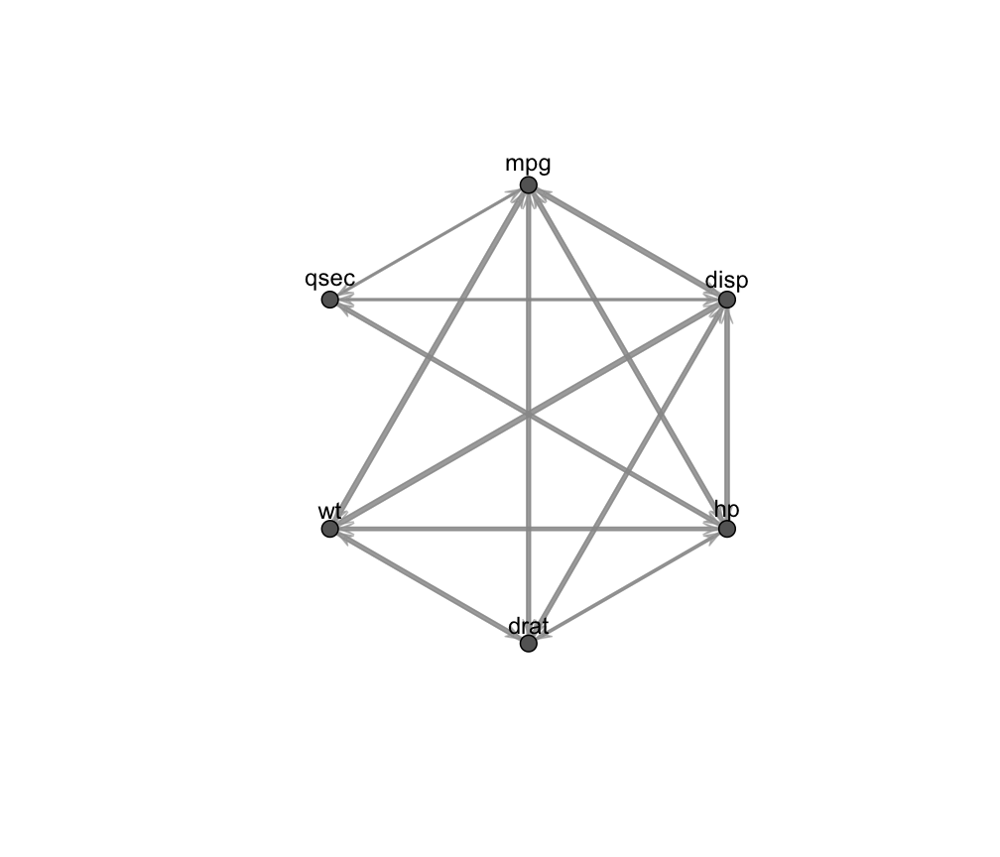
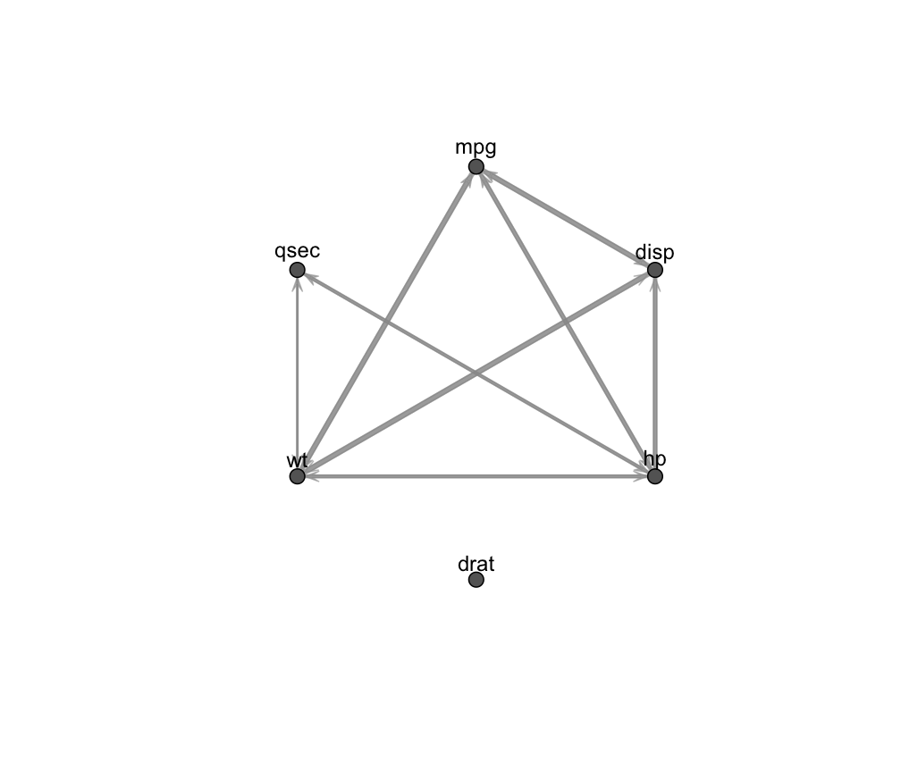
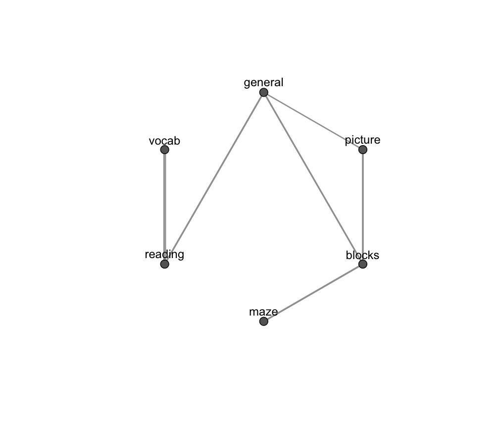

searchGGM.RdGraph structure search and estimation for Gaussian covariance and concentration graph models.
searchGGM(data = NULL, S = NULL, N = NULL, model = c("covariance", "concentration"), search = c("step-forw", "step-back", "ga"), penalty = c("bic", "ebic", "erdos", "power"), beta = NULL, start = NULL, regularize = FALSE, regHyperPar = NULL, ctrlStep = ctrlSTEP(), ctrlGa = ctrlGA(), ctrlIcf = ctrlICF(), parallel = FALSE, verbose = FALSE, ...)
| data | A dataframe or matrix, where rows correspond to observations and columns to variables. Categorical variables are not allowed. |
|---|---|
| S | The sample covariance matrix of the data. If |
| N | The number of observations. If |
| model | The type of Gaussian graphical model. Default is |
| search | The type of structure search algorithm. If |
| penalty | The penalty function used to define a criterion for scoring the candidate graph configurations. Default is |
| beta | The hyperparameter of the penalty function. See "Details" and |
| start | A starting matrix for the estimation algorithm. If |
| regularize | A logical argument indicating if Bayesian regularization should be performed. Default to |
| regHyperPar | A list of hyper parameters for Bayesian regularization. Only used when |
| ctrlStep | A list of control parameters used in the stepwise search; see also |
| ctrlGa | A list of control parameters for the genetic algorithm; see also |
| ctrlIcf | A list of control parameters employed in the algorithm for estimation of graphical model parameters; see also |
| parallel | A logical argument indicating if parallel computation should be used for structure search. If TRUE, all the available cores are used. The argument could also be set to a numeric integer value specifying the number of cores to be employed. |
| verbose | A logical argument controlling whether iterations of the structure searching and estimation procedure need to be shown or not. |
| ... | Additional internal arguments not to be provided by the user. |
An object of class 'fitGGM' containing the optimal estimated marginal or conditional independence Gaussian graphical model.
The output is a list containing:
The estimated covariance matrix.
The estimated concentration (inverse covariance) matrix.
The adjacency matrix corresponding to the optimal marginal or conditional independence graph.
Estimated model type, whether "covariance" or "concentration".
Value of the maximized penalized log-likelihood.
Value of the maximized log-likelihood.
Number of estimated parameters.
Number of observations.
Number of variables, corresponding to the number of nodes in the graph.
The type of penalty on the graph structure.
The search method used for graph structure search.
An object of class 'ga-class' with information about the genetic algorithm. Only present when search = "ga". See ga.
The function performs graph association structure search and maximum penalized likelihood estimation of the optimal Gaussian graphical model given the data provided in input.
A Gaussian covariance graph model is estimated if model = "covariance", while estimation of a Gaussian covariance graph model is performed if model = "concentration". A Gaussian covariance graph model postulates that some variables are marginally independent according to the inferred graph structure. On the other hand, in a Gaussian concentration graph model, variables are conditionally independent given their neighbors in the inferred graph. See also fitGGM.
Search for the optimal graph structure and parameter estimation is carried out by maximization of a Gaussian penalized likelihood, given as follows: $$ \mbox{Covariance:}~~~ \mbox{argmax}_{\Sigma,A} ~~ \ell(X | \Sigma, A) - P(A, \beta) \quad \Sigma \in C^{+}_G(A)$$ $$ \mbox{Concentration:}~~~ \mbox{argmax}_{\Omega,A} ~~ \ell(X | \Omega, A) - P(A, \beta) \quad \Omega \in C^{+}_G(A)$$ where \(C^{+}_G(A)\) is the collection of sparse positive definite matrices whose zero patterns are given by graph \(G\) represented by the adjacency matrix \(A\).
The penalty function \(P(A, \beta)\) depends on the structure of graph \(G\) through the adjacency matrix \(A\) and a parameter \(\beta\); see penalty on how to specify the penalization term and for further information.
For this type of penalized log-likelihood, graph structure search and parameter estimation is a maximization combinatorial problem. For a given candidate structure (i.e. adjacency matrix), association parameters in the covariance or concentration matrix are estimated using the estimation algorithms implemented in fitGGM. Regarding structure search, this can be carried out either using a greedy forward-stepwise or a greedy backward-stepwise algorithm, by setting search = "step-forw" or search = "step-back" respectively. Alternatively, a stochastic search via genetic algorithm can be used by setting search = "ga". The procedure for the forward stepwise search is described in Fop et al. (2018), and the backward is implemented in a similar way; the genetic algorithm procedure relies on the GA package. All the structure searching methods can be run in parallel on a multi-core machine by setting the argument parallel = TRUE.
Fop, M., Murphy, T.B., and Scrucca, L. (2018). Model-based clustering with sparse covariance matrices. Statistics and Computing. To appear.
Scrucca, L. (2017). On some extensions to GA package: Hybrid optimisation, parallelisation and islands evolution. The R Journal, 9(1), 187-206.
Scrucca, L. (2013). GA: A package for genetic algorithms in R. Journal of Statistical Software, 53(4), 1-3.
# fit covariance graph model with default forward-stepwise search data(mtcars) x <- mtcars[,c(1,3:7)] mod1 <- searchGGM(x, model = "covariance") mod1#> #> Gaussian covariance graph model #> for marginal independence #> ==================================== #> N. dependence parameters: 13 #> Log-likelihood: -335.44 #> Penalized log-likelihood: -357.97 #> Penalty: bic #> Search: step-forwplot(mod1)# # prefer a sparser model mod2 <- searchGGM(x, model = "covariance", penalty = "ebic") mod2#> #> Gaussian covariance graph model #> for marginal independence #> ==================================== #> N. dependence parameters: 8 #> Log-likelihood: -353.24 #> Penalized log-likelihood: -395.77 #> Penalty: ebic #> Search: step-forwplot(mod2)# fit concentration graph model with backward-stepwise structure search # with a covariance matrix in input data(ability.cov) mod3 <- searchGGM(S = ability.cov$cov, N = ability.cov$n.obs, model = "concentration", search = "step-back") mod3#> #> Gaussian concentration graph model #> for conditional independence #> ======================================= #> N. dependence parameters: 6 #> Log-likelihood: -1406.17 #> Penalized log-likelihood: -1420.32 #> Penalty: bic #> Search: step-backmod3$graph#> [,1] [,2] [,3] [,4] [,5] [,6] #> [1,] 0 1 1 0 1 0 #> [2,] 1 0 1 0 0 0 #> [3,] 1 1 0 1 0 0 #> [4,] 0 0 1 0 0 0 #> [5,] 1 0 0 0 0 1 #> [6,] 0 0 0 0 1 0mod3$omega#> general picture blocks maze reading vocab #> general 0.08115994 -0.02581133 -0.01049276 0.00000000 -0.02377784 0.00000000 #> picture -0.02581133 0.23330570 -0.02235247 0.00000000 0.00000000 0.00000000 #> blocks -0.01049276 -0.02235247 0.01338466 -0.01271862 0.00000000 0.00000000 #> maze 0.00000000 0.00000000 -0.01271862 0.09810766 0.00000000 0.00000000 #> reading -0.02377784 0.00000000 0.00000000 0.00000000 0.06033143 -0.02510099 #> vocab 0.00000000 0.00000000 0.00000000 0.00000000 -0.02510099 0.01977790plot(mod3)# NOT RUN { # generate data from a Markov model N <- 1000 V <- 20 dat <- matrix(NA, N, V) dat[,1] <- rnorm(N) for ( j in 2:V ) dat[,j] <- dat[,j-1] + rnorm(N, sd = 0.5) mod4 <- searchGGM(data = dat, model = "concentration") # recover the model plot(mod4, what = "adjacency") # }